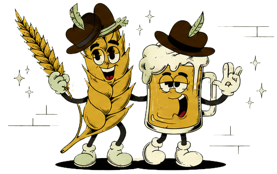

Witbier to belgijski klasyk: jasny, naturalnie mętny i pełen cytrusowo-korzennych niuansów.
- 20 l
- objętość całej warki
- 40
- butelek po 500 ml
- 18–22°C
- temperatura fermentacji
Domowa seria limitowana · 01/2026
Witbier · belgijskie piwo pszeniczne
Lekkie, mętne i orzeźwiające. Słody, chmiele, skórka pomarańczy Curacao i kolendra skupione w jednej butelce!

O tej warce
Witbier to belgijski klasyk: jasny, naturalnie mętny i pełen cytrusowo-korzennych niuansów.
Receptura
Kliknij składnik — każdy zostawia po sobie inny ślad.
„To dzięki mnie piwo jest lekkie, miękkie i przyjemnie mętne. Nie filtruj wrażeń.”
Poznaj aromaty
To mały przewodnik po dużej przyjemności. Dopasuj temperaturę i poznaj szczegóły.
Idealnie. Cytrusy są wyraźne, a piwo pozostaje rześkie.
Ściana wspomnień
Zostaw krótką notatkę, ocenę albo zdjęcie z degustacji. Trafisz od razu na ścianę Lucky Wheat.
Edycja kolekcjonerska
Lucky Wheat to 40 butelek domowego witbiera. Schłodź do 6–8°C i wznieś toast za kolejne warki.